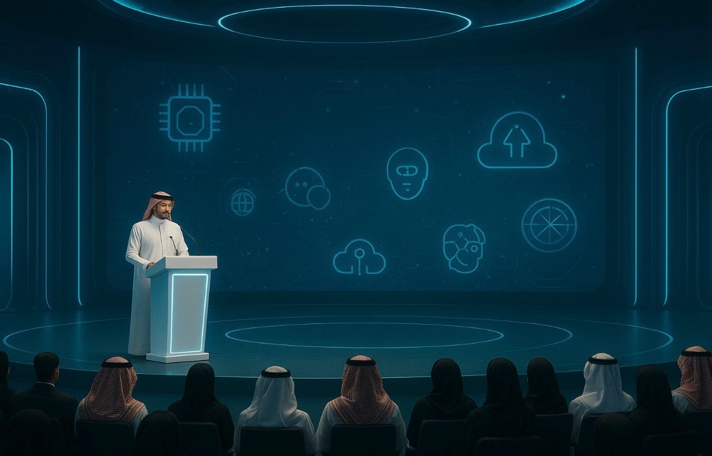

الأخبار و المستجدات

أخبار الوزارة
شهدت وزارة الاتصالات وتقنية المعلومات خلال الفترة الأخيرة
مجموعة من التحركات والتحديثات اللي تهدف إلى تطوير البنية الرقمية في المملكة.
من أبرزها إطلاق مبادرة لزيادة سرعة الإنترنت في المناطق الريفية،
مع توسّع كبير في تمديد شبكات الألياف البصرية. الوزارة أعلنت أيضًا عن تكامل جديد بين عدد من الجهات
الحكومية لتسريع خدمات التحول الرقمي وتسهيل إجراءات المستفيدين عبر المنصات الإلكترونية.
كذلك، تم التوقيع على عدة اتفاقيات مع شركات عالمية
ومحلية لدعم التدريب التقني، وتوفير برامج تطويرية تساعد الشباب السعوديين
على اكتساب مهارات في مجالات مثل البرمجة، الذكاء الاصطناعي، وتحليل البيانات.
المؤتمرات التقنية
شاركت الوزارة مؤخرًا في عدد من المؤتمرات المهمة داخل المملكة وخارجها.
من أهمها مؤتمر التحول الرقمي السنوي اللي جمع خبراء من عدة دول،
وتم فيه مناقشة أحدث التقنيات مثل الحوسبة السحابية، المدن الذكية، وإنترنت الأشياء.
وشارك متحدثون رسميون من الوزارة في جلسات طرحت فيها خطط تطوير القطاع الرقمي حتى عام 2030.
كما حضرت الوزارة مؤتمر الأمن السيبراني الدولي اللي ركّز على حماية الأنظمة
الرقمية ورفع مستوى الأمان في المنصات الحكومية والخاصة،
وتم فيه الإعلان عن مشاريع جديدة تعزز أمن المعلومات على مستوى المملكة

الفعاليات التقنية
خلال الشهرين الماضيين،
نظّمت الوزارة مجموعة فعاليات تقنية موجهة للطلاب والمطورين والمهتمين بالابتكار.
من أبرز الفعاليات:
- ورشة عمل عن الأمن السيبراني تضمنت شرح طرق حماية البيانات ورفع الوعي الرقمي
- ملتقى المطورين اللي جمع بين شركات التقنية والطلاب لعرض أفكار جديدة وحلول برمجية.
- جلسات حوارية عن الذكاء الاصطناعي تناقش مستقبل الذكاء الصناعي وكيف بيغيّر طريقة عمل القطاعات الحكومية والقطاع الخاص.
هذي الفعاليات تهدف إلى نشر المعرفة التقنية بشكل أوسع،
وتشجيع الشباب على خوض مجالات تقنية جديدة وابتكار حلول تخدم المملكة.
الانتقال للصفحة التالية